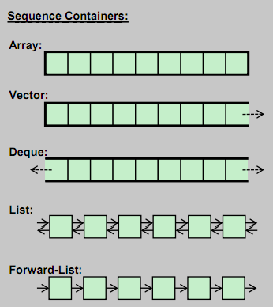

STL #1
Sequence containers
Mateusz Adamski
Łukasz Ziobroń
## Agenda 1. <!-- .element: class="fragment fade-in" --> STL reminder 1. <!-- .element: class="fragment fade-in" --> How to read documentation 1. <!-- .element: class="fragment fade-in" --> <code>std::vector<T></code> 1. <!-- .element: class="fragment fade-in" --> <code>std::list<T></code> 1. <!-- .element: class="fragment fade-in" --> <code>std::forward_list<T></code> 1. <!-- .element: class="fragment fade-in" --> <code>std::array<T, N></code> 1. <!-- .element: class="fragment fade-in" --> <code>std::deque<T></code>
## Homework [Repo GH `coders-school/stl`](https://github.com/coders-school/stl/tree/master/module1/homework) Tasks performed during online lesson do not require downloading repo. The files will be created from scratch.
## A quick reminder ### What do we already know * <!-- .element: class="fragment fade-in" --> what do you remember from previous lesson? * <!-- .element: class="fragment fade-in" --> what was the most difficult thing? * <!-- .element: class="fragment fade-in" --> what was the easiest thing to understand?
Sequence container

Coders School